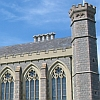

Vendrédi, lé 26 d'avri, dans les 80 membres lus rêunîtent au Collège Victoria pour la rêunion mensuelle.
Lé Sieur Brian Vibert donnit un divèrsément bouan discours en Jèrriais sus lé Collège du tout c'menchement au présent. La pus grand' partie des Jèrriais n'avaient pas veu lé Collège. Lé Sieur Vibert dit qu'il avait fait san êcolage là et pis prînt coumme maître en 1967. Ch'tait sa preunmié fais à pâler en Jèrriais dans l'Collège pour adréchi eune audience.
En 1669 Charles II 'tait èrconnaîssant ès Jèrriais et à Jèrri, i' dit au Bailli dé l'ver eune taxe sus la litcheu et vîn et fonder un collège. En 1847 chenn'chîn fut c'menchi. Quand la Reine Victoria vînt en Jèrri en 1849 la preunmié pièrre fut mînse, et en 1852 lé Collège fut ouvèrt par la Reine Victoria et san Prince Albert.
Dans chu temps-là, le gouvèrnément du Collège était lé Gouvèrneux d'Jèrri, lé Bailli, quatre Juges et siex Membres des Êtats. Chenn'chîn continuit jusqu'à 1920 quand lé Conmité d'Êducation Publique prînt chèrge.
La Fanmille Rouoyale a tréjous prînt grand întéthêt dans l'Collège, et quand i' font eune visite en Jèrri i' vont au Collège. En 1972 la Prîncêsse Anne ouvrit lé nouvieau bâtisse, le laboratouaithe dé scienche.
Y'a 480 garçons et 36 maîtres, et au "Prep." y'a 200 garçons et 15 maîtres au présent. En 1910 y'avait 200 garçons dans l'Collège et dans la salle iou que les membres 'taient, quatre ou chînq clâsses faîsaient lus êtudes au même temps. En 1911 lé bâtisse dans l'bel en entrant fut construit et consiste dé chînq clâsses. En 1952 la salle pour lé dessin fut bâtie et nommée de Carteret. Ou donne sus Le Mont Millais, et consiste dé dgiex clâsses.
A 11 ans les garçons c'menchent à êtudier l'Angliais, mathématiques, lé Français, la Bibl'ye, musique et eune deuxième langue, l'Allemand ou bein l'Espagno. A 14 ans i' spécialisent et à 16 ans i' prennent les preunmié examens. À 17-18 ans i' prennent deux ou trais sujets pour lé "GCE",
Les filles du Collège joignent les garçons dé la siexième clâsse pour la scienche et mathématiques et i' vont au Collège ès Filles pour la géographie et l'Français. Châque groupe dé garçons a un maître et i' soigne dé ches êfants-là pour lus temps au Collège. En d'hors y'a plusieurs sports, football, hockey, cricket, squash, basketball, etc., et plusieurs autres gammes et activités. I' vont pour apprendre à bâti, ou bein peindre, aidgi ès vielles gens, faithe eune touônnée d'l'île pour apprendre et vaie des pliaiches historiques.
L'autre côté dé la route, a la maison du Collège, y'a 40 garçons en pension, deux maîtres et eune matronne , les garçons veinnent dé toutes nationalités.
Lé Sieur Vibert, à la fin d discours, èrchut d'grands appliaudiss'ment bein méthités pour san magnifique discours.
D'ichîn les membres fîtent eune touônnée du Collège en groupes dé seize à dgiex-huit auvec dé difféthents maîtres qu'étaient v'nus spécialement pour les condithe à travèrs,
I' vîtent la difféthence des vièrs bâtisses et les nouvieaux. Lé changement dans les clâsses. Pas d'êcritouaithes dans les modèrnes clâsses, mais des tabl'yes ; dans tchiques clâsses les garçons lus assièvent lé tou d'l'apartément pour distchussion. Châque garçon garde ses livres, etc., dans eune aûmathe. Y'a un magnifique théâtre pour des conféthences, eune bibliothèque dé scienche, lé laboratouaithe et eune salle pour l'art qui fut bâtie en mémouaithe des êcolièrs du passé qui fûtent tués à la deuxième dgèrre. Lé "Templ'ye " eune pliaiche qu'était historique, fut brulé mais, étant d'împortance, lé Conmité du " IDC " donnit permission qu'i' fûsse èrbâti. Y'a un bel apartément pour des rêunions et en d'ssous les archives dé l'êcole. La veue d'ichîn est supèrbe.
La touônnée finie, les membres lus rêunîtent dans la grand' salle pour les affaithes. Dévant c'menchi, lé Président, lé Connêtabl'ye W. J. Tomes, d'mandit ès membres dé lus l'ver et observer eune minute dé silence en mémouaithe dé Mde. D. Nicolle et lé Sieur R. Murning.
Auprès, lé rapport dé la dreine rêunion fut liut et accepté, eune nouvelle membre fut êlue et tchiques lettres à des membres malades, etc., fûtent liues.
Lé Président èrmèrcyit lé Sieur Vibert et ses collègues pour eune séthée si mémorabl'ye et dit qué du café et galettes s'n'allaient être sèrvis, et r'mèrcyit les siens concernés étout.
La préchaine rêunion étha lieu à ces sé lé 29 dé mai au Fort Régent à 7 heuthes un quart. Ché s'sa 40p pour tout (entrée, rafraîchiss'ments, etc.).
Eune touônnée étha lieu jeudi, lé 24 dé juillet, arrangie par le Conmité Dramatique. Lé prix pour lé jour, £2.75 (touônnée en char-à-bancs et r'pas du sé à l'Aéropôrt). Pour les siens qui veulent prendre lé r'pas du sé seulement, £2.00 ; s'trouver à l'Aéroport; à 7 heuthes un quart.
1975
Viyiz étout: